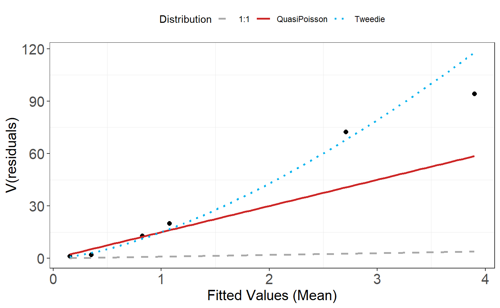
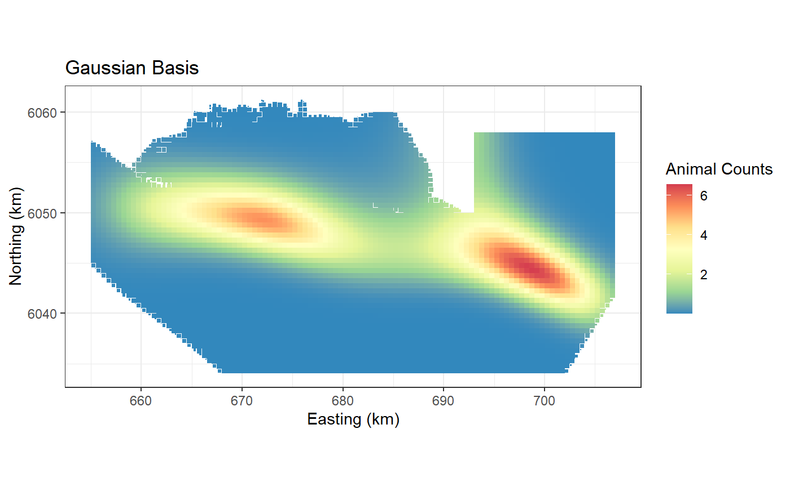

Using the Tweedie Distribution
Lindesay Scott-Hayward
2024-05-08
Source:vignettes/web/TheTweedieDistribution_MRSea.Rmd
TheTweedieDistribution_MRSea.RmdThis document shows how to fit a gamMRSea model using
the Tweedie distribution.
The Tweedie distribution
The variance of the Tweedie distribution is parametrised by the mean \(\mu\) and the dispersion parameter \(\phi\):
\[Var(y) = V(\mu)\phi = \mu^\xi\phi\]
The following distributions can be achieved by specifying the following values for \(\xi\)
- Gaussian (\(\xi = 0\))
- Poisson (\(\xi = 1\))
- Gamma (\(\xi = 2\))
- Inverse Gaussian (\(\xi = 3\))
For zero inflated data, i.e. the response distribution has mass at zero (i.e., it has exact zeros) but is otherwise continuous on the positive real numbers, the values of \(\xi\) between 1 and 2 are particularly useful to us.
An example of fitting the tweedie distribution in
R
In this example, \(\xi = 1.1\) and the model can be described as:
\[y_i \sim Tw(\mu_{i}, \phi, \xi)\]
where \[log(\mu_i) = \beta_0 + \beta_1x_i\]
and \[ Var(y_i) = \mu_i^{1.1} \phi\]
var.power specifies the value for \(\xi\) and link.power = 0
indicates a log link is used.
For example, tweedie(var.power=1, link.power=0) is
equivalent to quasipoisson(link="log"). Note: it is not
equivalent to poisson(link="log") as the dispersion is not
set equal to 1.
Setup
- Load some data
- Fit a simple intercept only model and show the link between
tweedieandquasipoisson.
# load data
data(ns.data.re)Two additional libraries are required for model fitting and
selection. statmod provides the model family
tweedie() and the tweedie package contains an
appropriate AIC.
Fit a Tweedie model with \(\xi = 1\) and a log link function.
fit_tw<- glm(birds ~ 1, family=tweedie(var.power=1, link.power = 0),data=ns.data.re)
summary(fit_tw)
#>
#> Call:
#> glm(formula = birds ~ 1, family = tweedie(var.power = 1, link.power = 0),
#> data = ns.data.re)
#>
#> Deviance Residuals:
#> Min 1Q Median 3Q Max
#> -1.717 -1.717 -1.717 -1.717 37.696
#>
#> Coefficients:
#> Estimate Std. Error t value Pr(>|t|)
#> (Intercept) 0.38773 0.02399 16.16 <2e-16 ***
#> ---
#> Signif. codes: 0 '***' 0.001 '**' 0.01 '*' 0.05 '.' 0.1 ' ' 1
#>
#> (Dispersion parameter for Tweedie family taken to be 23.56597)
#>
#> Null deviance: 186644 on 27797 degrees of freedom
#> Residual deviance: 186644 on 27797 degrees of freedom
#> AIC: NA
#>
#> Number of Fisher Scoring iterations: 7Fit the equivalent model using the quasipoisson distribution.
fit_qp<- glm(birds ~ 1, family=quasipoisson(link="log"),data=ns.data.re)
summary(fit_qp)
#>
#> Call:
#> glm(formula = birds ~ 1, family = quasipoisson(link = "log"),
#> data = ns.data.re)
#>
#> Deviance Residuals:
#> Min 1Q Median 3Q Max
#> -1.717 -1.717 -1.717 -1.717 37.696
#>
#> Coefficients:
#> Estimate Std. Error t value Pr(>|t|)
#> (Intercept) 0.38773 0.02399 16.16 <2e-16 ***
#> ---
#> Signif. codes: 0 '***' 0.001 '**' 0.01 '*' 0.05 '.' 0.1 ' ' 1
#>
#> (Dispersion parameter for quasipoisson family taken to be 23.56596)
#>
#> Null deviance: 186644 on 27797 degrees of freedom
#> Residual deviance: 186644 on 27797 degrees of freedom
#> AIC: NA
#>
#> Number of Fisher Scoring iterations: 7Note that the two model outputs are identical. In reality though we
need to find out what value of \(\xi\)
is best for our data. For this we can use the
tweedie.profile function from the tweedie
library.
Note: this function can take a long time to run.
profout <- tweedie.profile(birds ~ 1,
data=ns.data.re,
xi.vec = seq(1.01, 1.99, by=0.05), do.plot=TRUE)
#> 1.01 1.06 1.11 1.16 1.21 1.26 1.31 1.36 1.41 1.46 1.51 1.56 1.61 1.66 1.71 1.76 1.81 1.86 1.91 1.96
#> ....................Done.
profout2 <- tweedie.profile(birds ~ MonthOfYear + x.pos + y.pos + Year,
data=ns.data.re,
xi.vec = seq(1.01, 1.99, by=0.05), do.plot=TRUE)
#> 1.01 1.06 1.11 1.16 1.21 1.26 1.31 1.36 1.41 1.46 1.51 1.56 1.61 1.66 1.71 1.76 1.81 1.86 1.91 1.96
#> ....................Done.
profout$xi.max
#> [1] 1.533469
profout2$xi.max
#> [1] 1.514082Fitting a gamMRSea model
Lets fit a model to the data using one smooth variable; month of the year.
varlist=c('x.pos')
ns.data.re$response <- ns.data.re$birdsSet up the initial model with the Tweedie distribution parameterised
with the log link function (link.power=0) and the variance
power (\(\xi\)) equal to our output
from the profiling (var.power =).
initialModel<- glm(response ~ 1, family=tweedie(var.power=profout2$xi.max, link.power = 0),data=ns.data.re)Remember to specify a Tweedie specific fitness measure of either
AICtweedie or BICtweedie.
# set some input information for SALSA
salsa1dlist<-list(fitnessMeasure = 'AICtweedie',
minKnots_1d = c(1),
maxKnots_1d = c(3),
startKnots_1d = c(1),
degree = c(2),
gaps = c(0),
splines = c("bs"))
# run SALSA
salsa1dOutput<-runSALSA1D(initialModel,
salsa1dlist,
varlist = varlist,
datain = ns.data.re,
suppress.printout = TRUE)
summary(salsa1dOutput$bestModel)
#>
#> Call:
#> gamMRSea(formula = response ~ bs(x.pos, knots = splineParams[[2]]$knots,
#> degree = splineParams[[2]]$degree, Boundary.knots = splineParams[[2]]$bd),
#> family = tweedie(var.power = 1.51408163265306, link.power = 0),
#> data = ns.data.re, splineParams = splineParams)
#>
#> Deviance Residuals:
#> Min 1Q Median 3Q Max
#> -2.824 -2.065 -1.572 -1.285 18.351
#>
#> Coefficients:
#> Estimate Std. Error Robust S.E. t value Pr(>|t|)
#> (Intercept) -0.193025 0.062998 0.062998 -3.064 0.00219 **
#> s(x.pos)1 -1.847683 0.123556 0.123556 -14.954 < 2e-16 ***
#> s(x.pos)2 2.380156 0.090935 0.090935 26.174 < 2e-16 ***
#> s(x.pos)3 -0.001573 0.147135 0.147135 -0.011 0.99147
#> s(x.pos)4 -7.935174 0.471108 0.471108 -16.844 < 2e-16 ***
#> ---
#> Signif. codes: 0 '***' 0.001 '**' 0.01 '*' 0.05 '.' 0.1 ' ' 1
#>
#> (Dispersion parameter for Tweedie family taken to be 15.00317)
#>
#> Null deviance: 169879 on 27797 degrees of freedom
#> Residual deviance: 139354 on 27793 degrees of freedom
#> AIC: NA
#>
#> Max Panel Size = 1 (independence assumed); Number of panels = 27798
#> Number of Fisher Scoring iterations: 7
AICtweedie(salsa1dOutput$bestModel)
#> [1] 62825.28
cv.gamMRSea(ns.data.re, salsa1dOutput$bestModel, K = 10, s.eed=1)$delta[2]
#> [1] 33.01696
runPartialPlots(salsa1dOutput$bestModel, data=ns.data.re,
varlist.in = varlist, showKnots = TRUE)
#> [1] "Making partial plots"
plotMeanVar(salsa1dOutput$bestModel)
Two dimensional Smoothing
Starting point
This is the same starting point for one dimensional splines if it is only a two dimensional smooth you want.
- Load some data
- Fit an initial model. For simplicity we fit an intercept only model.
# load data
baselinedata <- filter(nysted.analysisdata, impact == 1, season == 1)
profout <- tweedie.profile(response ~ x.pos + y.pos + depth,
data=baselinedata,
xi.vec = seq(1.01, 1.99, by=0.05), do.plot=TRUE)
#> 1.01 1.06 1.11 1.16 1.21 1.26 1.31 1.36 1.41 1.46 1.51 1.56 1.61 1.66 1.71 1.76 1.81 1.86 1.91 1.96
#> ....................Done.
initialModel<- glm(response ~ 1, family=tweedie(var.power=profout$xi.max, link.power = 0),data=baselinedata)
kg <- getKnotgrid(baselinedata[, c("x.pos", "y.pos")], numKnots = 300, plot = FALSE)
# make distance matrices for datatoknots and knottoknots
distMats<-makeDists(baselinedata[, c("x.pos", "y.pos")], kg)
# make prediction distance matrix.
preddata <- filter(nysted.predictdata, impact == 0, season == 1)
p2k <-makeDists(preddata[, c("x.pos", "y.pos")], kg, knotmat = FALSE)$dataDist
# make parameter set for running salsa2D
salsa2dlist<-list(fitnessMeasure = 'AICtweedie',
knotgrid = na.omit(kg),
startKnots=10,
minKnots=2,
maxKnots=20,
gap=0)
salsa2dOutput<-runSALSA2D(initialModel,
salsa2dlist,
d2k=distMats$dataDist,
k2k=distMats$knotDist,
basis = "gaussian", ##
suppress.printout = TRUE)
preddata$preds.g <- predict(object = salsa2dOutput$bestModel,
newdata = preddata, g2k = p2k)
ggplot() +
geom_tile(data=preddata, aes(x.pos, y.pos, fill=preds.g,
height=sqrt(area), width=sqrt(area))) +
xlab("Easting (km)") + ylab("Northing (km)") + coord_equal() +
theme_bw() + ggtitle("Gaussian Basis") +
scale_fill_distiller(palette = "Spectral",name="Animal Counts")
plotMeanVar(salsa2dOutput$bestModel)